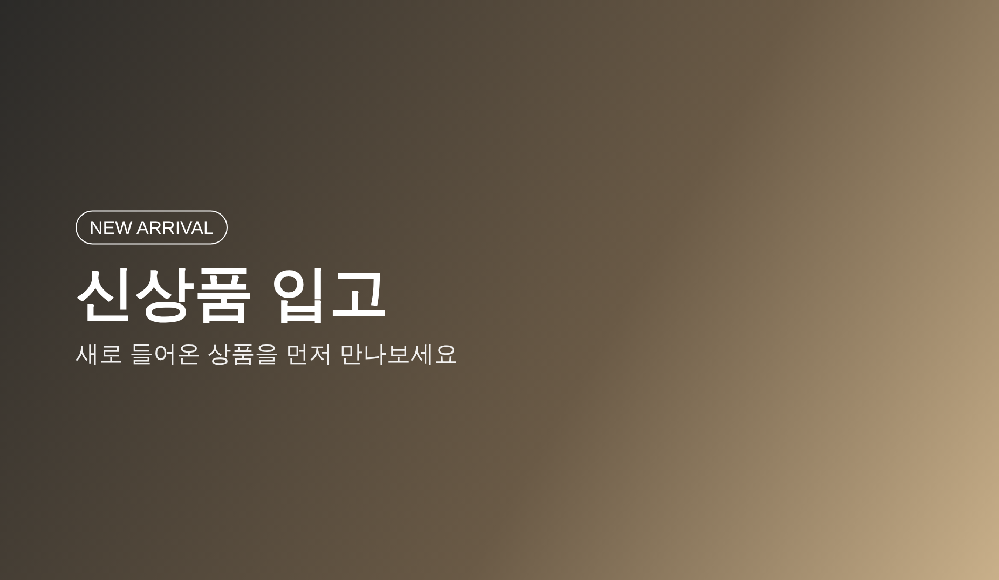
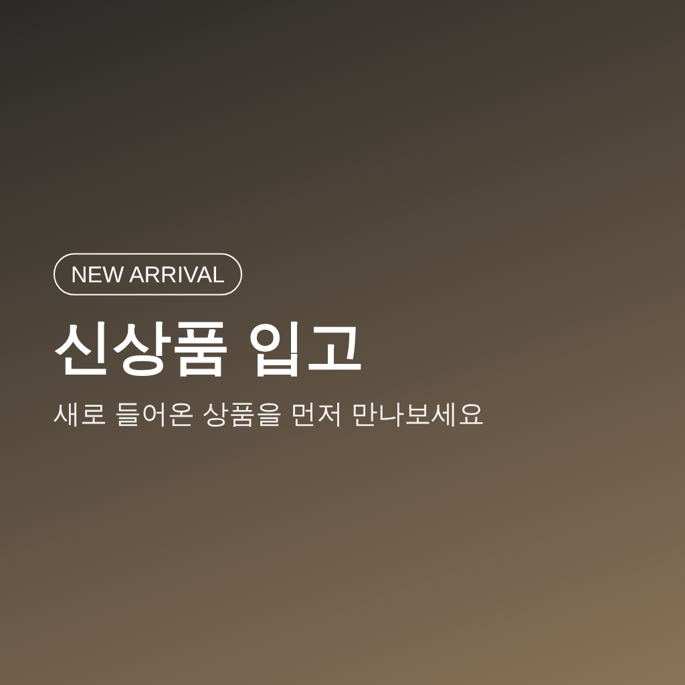
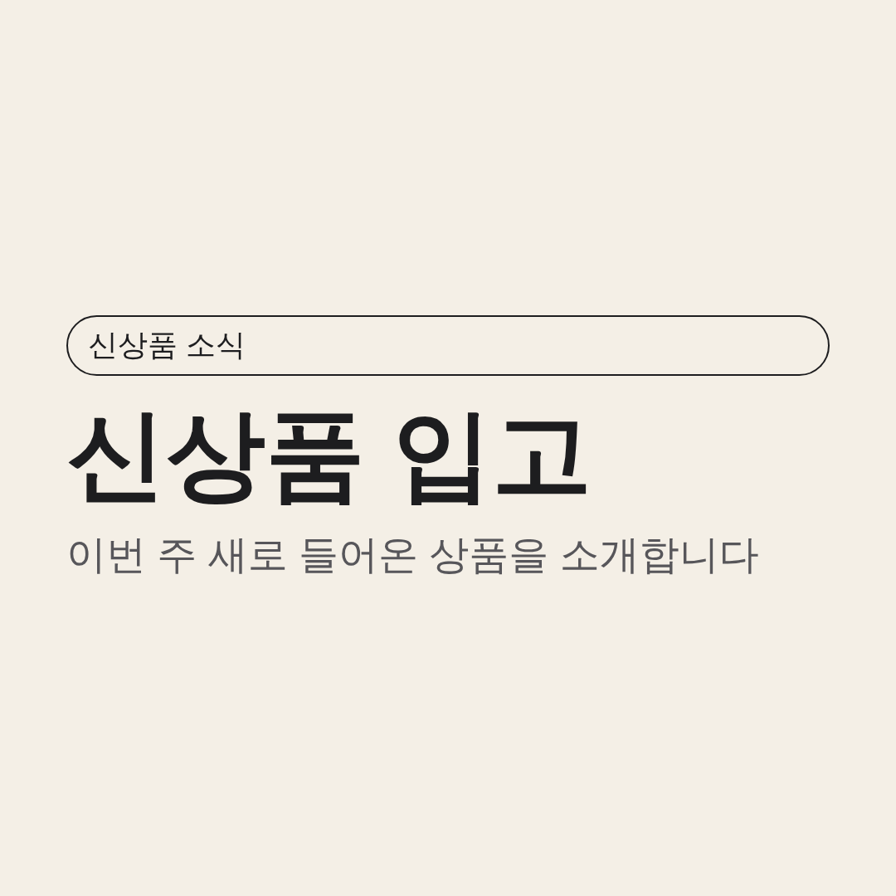

1. 상품 등록·수정 및 진열 관리완료
카페24 자사몰·네이버 스마트스토어에 상품을 등록·수정하고, 메인과 카테고리에 진열합니다.
| 상품명 | 예: 베이직 상품 A |
|---|---|
| 카테고리 | 카테고리 1 / 2 / 3 (목록 탭에서 분류) |
| 판매가·할인가 | 정가와 할인가 입력 시 목록에 취소선 가격과 할인가가 함께 표시 |
| 옵션 | 구성 옵션과 추가금액 설정 (상세에서 선택 시 총액 자동 계산) |
| 대표 이미지 | 1000×1000 정사각형 (스마트스토어 권장 규격) |
| 진열 | 신상품: 최근 등록순 4개 / 베스트: 판매량순 4개 / 카테고리별 정렬(인기·낮은가·높은가) |
2. 상품 이미지 편집완료
포토샵으로 상품 사진을 정리하는 작업입니다. 아래는 편집 전후 예시입니다.


- 작업 순서: 구도 잡기(1:1 크롭) → 배경 정리 → 색감·밝기 보정 → 파일 용량 확인 후 저장
- 이 예시는 웹 화면에서 만든 샘플입니다. 실제 포토샵 작업 파일(.psd)은 별도로 준비해 보여 드릴 수 있습니다.
3. PC·모바일 배너 제작 및 교체완료
자사몰과 스마트스토어의 PC·모바일 규격에 맞춰 배너를 만들고 교체합니다.


- 규격 출처: 카페24 몰리뉴얼 디자인 수정 가이드의 메인 대배너 권장 사이즈
- 스마트스토어 배너 규격은 공식 자료를 확인하지 못해 이 샘플에는 적용하지 않았습니다.
- 교체 방법: 같은 파일명 규격으로 저장 후 관리자 디자인 편집기에서 이미지 교체 → 미리보기 확인 → 적용
4. 카페24 HTML·CSS 페이지 구성 및 스타일 수정완료
HTML 구조를 만들고 CSS로 색·간격·반응형을 조정합니다.
- 색과 간격은
:root의 변수로 한 번에 바꿀 수 있게 구성했습니다. - PC 960px 이하, 모바일 640px 이하에서 목록 열 수와 배너 높이를 바꿉니다.
- 배너, 목록, 상세, 장바구니 구조를 HTML로 나눠 각 영역을 독립적으로 수정할 수 있습니다.
5. 인스타그램 게시물 제작·업로드완료
입고 소식과 신제품 소개 게시물을 만들어 올립니다.

- 문구 구성: 제목(신상품 입고) → 한 줄 소개 → 상품 사진 → 구매 링크 안내
- 업로드는 실제 계정이 필요해서 예시 이미지로만 보여 드립니다.